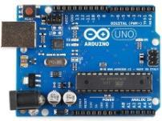
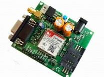
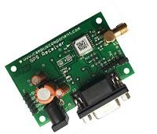

There are various Advanced Arduino Projects which solves the problems in our life. This is one of those Arduino projects. The advanced vehicle tracking system is an enhanced system that allows a user to track the vehicle using GPS along with the GSM modem. Using this vehicle tracking system user gets the location details of the vehicle where it is currently on his mobile and it can track it on Google map. For this purpose, we are using Arduino Uno as the main processing unit. The whole system is controlled by Arduino Uno. This Arduino is interfaced with LCD to display longitude and latitude. Also, it is interfaced with GPS and GSM modem. GSM modem is used to send SMS to the owner of the system.
Arduino based Vehicle Tracking System using GPS and GSM Project Cost: 13,800 10,900 Project Code: 5801 Order Now Description of the project There are various Advanced Arduino Projects which solves the problems in our life. This is one of those Arduino projects. The advanced vehicle tracking system is an enhanced system that allows a user to track the vehicle using GPS along with the GSM modem. Using this vehicle tracking system user gets the location details of the vehicle where it is currently on his mobile and it can track it on Google map. For this purpose, we are using Arduino Uno as the main processing unit. The whole system is controlled by Arduino Uno. This Arduino is interfaced with LCD to display longitude and latitude. Also, it is interfaced with GPS and GSM modem. GSM modem is used to send SMS to the owner of the system. Working of the project Once you start the system it starts sending location details. The user receives an SMS containing URL of location details. Once the user clicks on the URL, he/she can see the location on Google Maps with a marker. Nowadays every smartphone has Google Maps application preinstalled. So this URL opens in the Google Maps app. GPS tracker system constantly keeps on sending SMS of location details of where the vehicle is located. Using the map we can see the places around the vehicle also we can see the road on the map. So in this way the user can get the location of the vehicle and real-time vehicle location details. The system also has an SOS button which is used to send an SMS to the owner if there is an emergency. Real time vehicle tracking system using Arduino, GSM, and GPS is an innovative and user-friendly system. Sometimes a company’s transportation vehicles consume more and more fuel which results in loss of money. The solution for this is to install a GPS tracking device in the vehicle. It sends real-time updates of the vehicle coordinates. It also improves the safety and security of our car. We can also see the history by scrolling down through the SMS history in our SMS inbox. By using the tracker system can see what time the car was at which place.
|  |  |  |
You will get a CD with this project containing following documents:
GPS stands for Global Positioning System. Three satellites give exact position which means GPS modem should receive the signal from 3 satellites. GPS receives data from Antenna. GPS antenna should be sky facing. GSM module is used to communicate for calls and SMS. We need to insert sim card into the GSM modem.
Smart GPS tracking device should be fitted inside the car where it is not visible. This project can be operated on battery of the vehicle